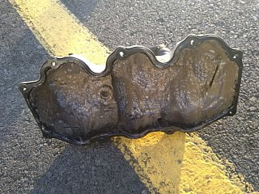
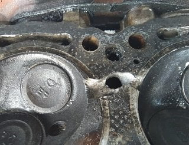

-
I bought an 88 NA for $300 bucks 4 days ago. It ran like shit and burned a lot of oil, so I assumed it was just a bad head gasket. It ran well enough to get it to the high school parking lot a few blocks away. After a few hoonish laps around the block the next day I realized that the cooling system was only half full. After adding at least two more gallons of water, I heard a faint trickling sound in the drivers side exhaust header. Because the battery had run flat while it was waiting to be sold, we tried push starting it to see if it would still turn over. The second I let out the clutch the wheels locked up and over a gallon of water shot out of the tail pipe. Later we tried jump starting it, and after sending almost another gallon of water out the tail, it started up and ran exactly as bad as it did before. After this I was starting to think that there had to be a crack in the head somewhere to let that much water straight out the exhaust so quickly.
We've started tearing down the engine during lunch and after school, and the results so far haven't been too great. There was a LOT of water in the oil, but there seemed to be little to no oil on the water. The passenger side valve cover was absolutely coated in milky sludge:
I'm not sure if there were any troubleshooting steps that I missed before tearing this thing apart, or if anyone has any tips on the next step to take. I am currently trying to get the 30+ hoses that are connected to the upper intake manifold off so I can get that out and have access to the drivers side head. -
rip 300.00
If your goal is to hoon that last bit of life out of it, slap on some autozone headgaskets and drive until it breaks again, throw it back on CL.
If your goal is to make it a more reliable driver, get another VG30 motor.
Tools and available work space will greatly impact your chances of success.

84 AE/Shiro #683/Shiro #820/84 Turbo -
From what I've read on other threads this block holds 500 HP stock, but people have cracked heads holding redline for too long, which I think is what the kid who owned it before me did to do this to it. I found a rebuilt head for about $400, and that would be the only major thing needed to get it back in running condition, besides all the other stuff needed when tearing an engine apart this far like gaskets, timing belt, head bolts, etc. I haven't been able to find a new engine for less than $1500, but I haven't tried junkyards yet. For that price I might as well pull an LS from a junkyard and swap that in.Last edited by $300ZX; 01-30-2019, 01:51 PM. -
400.00…for one head, uh nope.
Mercury villager, nissan quest and some 90's pathfinders used the same VG30 motor.
Not sure in your area, but in mine, Mercury villagers and Nissan quest minivans are not sought after parts donors in the pick-n-pulls and are relatively easy to find.
You can get those mini van heads from a pick-n-pull, use it's lifters and rockers but use your cams and be back in business with a cheap gasket kit.
If you're adventurous, a VG33 will also bolt in with some minor parts swapping.
84 AE/Shiro #683/Shiro #820/84 Turbo -
I'll try to make it out to a pick n pull soon to see what they've got. If I have it apart this far, are there any other significant mods required to throw in schieder cams and springs?
Also, what mods are required to to swap in a vg33?Last edited by $300ZX; 01-30-2019, 03:51 PM. -
Both questions require more involved answers than i can help you with.
You'll have to search to find your own resultsIf I have it apart this far, are there any other significant mods required to throw in schieder cams and springs?
You'll have to search to find your own resultsAlso, what mods are required to to swap in a vg33?
You can use google to search the forum posts for nuggets of info if you put site:z31performance.com after your search criteria.
search.JPGLast edited by Z_Karma; 01-30-2019, 04:11 PM.
84 AE/Shiro #683/Shiro #820/84 Turbo -
Thanks for the search tip.
From what I've seen there aren't problems with the valves contacting the stock pistons with the higher lift cam.
I should finally have the head out in a day or two, I'll update on the damage then. -
Originally posted by Z_Karma View Post
I never knew you could do that. Thanks! -
I second the buying a different engine. If you sent gallons of water out your tailpipe, that means your internals are probably shot, also. All that water will have gotten into your oil passages, and down into your oil pan, milking up everything. Say goodbye to your main and rod bearings. You're better off finding a junkyard engine and swapping it in, just my opinion.
Plenty of users on here are running aftermarket cams in their VGs… Isky, Schneider, Jim Wolfe, etc. Your valve clearance questions can be easily answered by contacting the manufacturers of said parts… they will know the specifications exactly.
WP_20170914_18_43_07_Pro.jpg
VG30ET with milk in the oil pan....Last edited by albionwanderer86; 02-01-2019, 07:18 PM.1985 300ZX Z31 2+2 VG33ET (running!) -
I got the passenger side head off today and found the problem.
The head melted between cylinders 3 and 5. Definitely time to head to pick n pull. -
I've finally found an engine to swap in. A friend of mine has caught the Z fever and wants one of his own, and he found another one for $300, this time an 86 NA auto. It's got a bad fuel pump, but I'm going to pull mine and put it in so we can get it here and swap his engine into my car. My friend plans to put in an LS or 350 sbc into that car afterwards.

Copyright © 2006–. All rights reserved. Privacy Policy